Core Premise
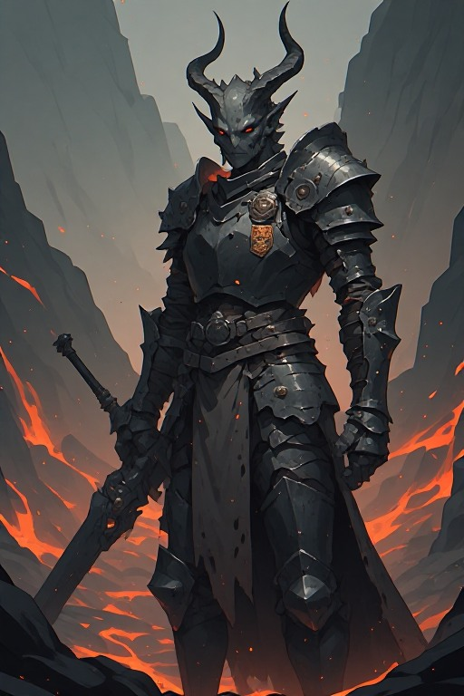
The Player
Vorath — Demon Foot Soldier
In the world of Vaeltharr, demons are an ancient, honourable civilisation slowly being exterminated by a coalition of human-led races. The Demon Lord was gravely wounded in a recent siege and forced into a humiliating truce — surrendering fertile lands and demon prisoners as slaves to buy peace.
You are Vorath, a soldier of low rank, clawing your way to the title of Grand Marshal to forge a new era for your people.
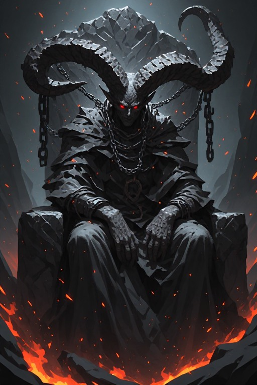
The Demon Lord
Kael'drath the Undying
Ancient, wounded, and still commanding. Kael'drath holds the fractured demon nation together by will alone. His injury has emboldened rivals and human aggressors alike. Whether Vorath serves him loyally or positions for succession defines the game's moral spine.
World — Vaeltharr

Cinderkeep
Carved from volcanic black stone. Home to the Ashen Throne and Kael'drath's war council. Every battle decision radiates from here.
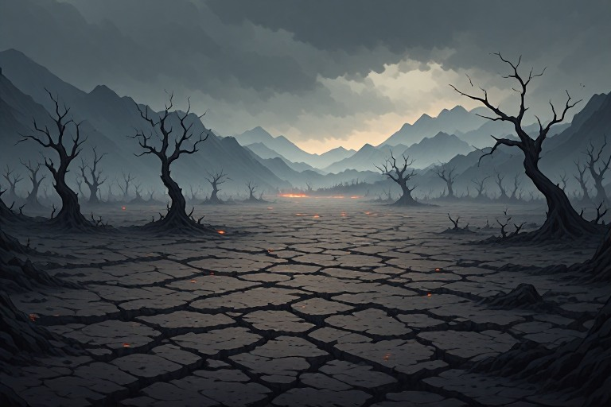
The Ashfields
Once fertile, now stripped by generations of war and human encroachment. What remains is barren, contested, and sacred.
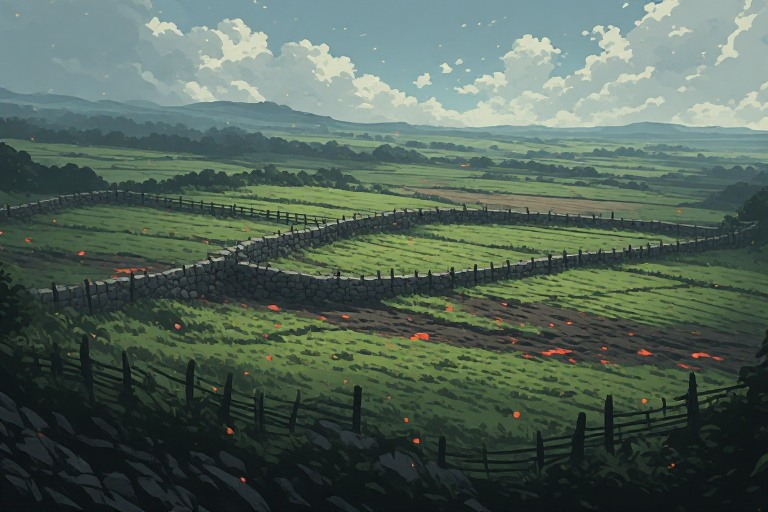
The Verdant Reach
Stolen demon farmlands now occupied by human settlers. The most contested border region — and the source of most early quests.
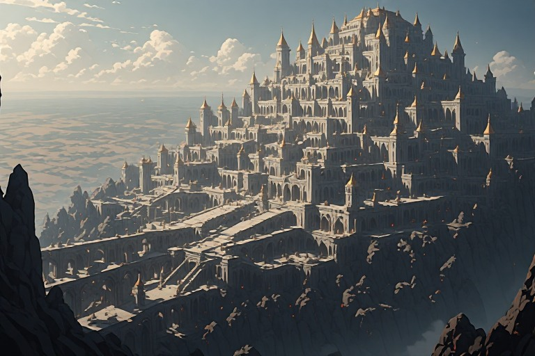
Aurenthal
Gleaming, prosperous, built on the backs of enslaved demons. Publicly champions peace while quietly funding border raids.
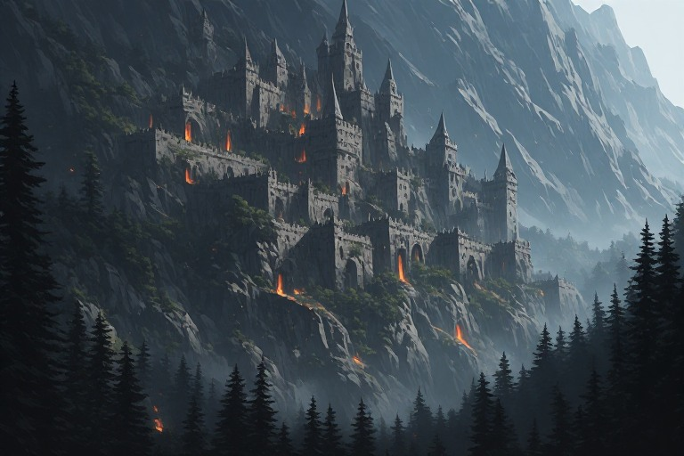
Ironroot Stronghold
Built into sheer mountain cliffs — the seat of the Ironroot Compact's alliance with Aurenthal. Fortified, cold, and prosperous at demon expense.
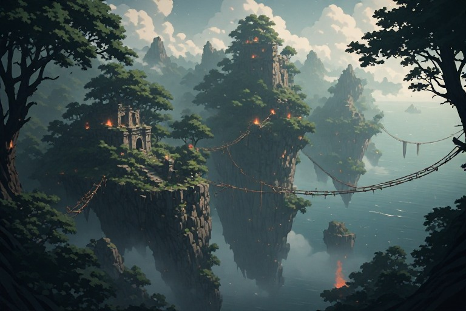
The Drifting Isles
Home of the wolf-kin and beast-kin. Politically fragile — all factions court their allegiance. Guerrilla fighters invaluable if won over.
Factions of Vaeltharr
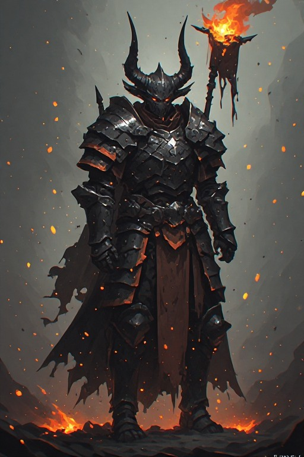
Allies
The Ashen Vanguard
The Demon Lord's standing army. Bound by the Code of Char — an ancient warrior ethic that forbids betrayal of one's sworn superior. Vorath begins here.
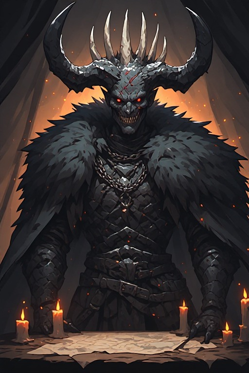
Rivals
The Hollow Pact
A cabal of ambitious demon warlords who see Kael'drath's injury as opportunity. They sabotage unity and push their own candidates for Grand Marshal.
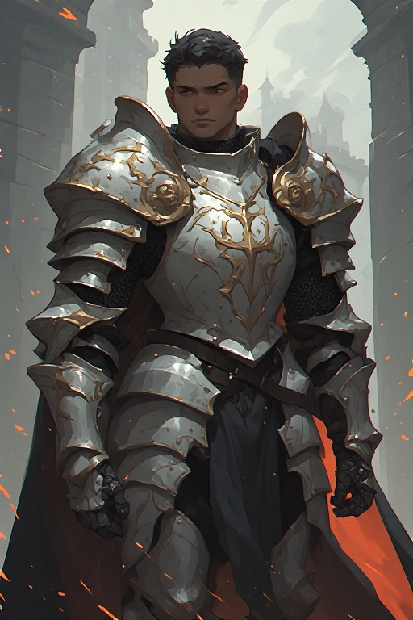
Antagonists
The Aurenthal Crown
The dominant human empire. Their "heroes" are state-sponsored soldiers sent to weaken demon leadership. Publicly righteous, privately brutal.
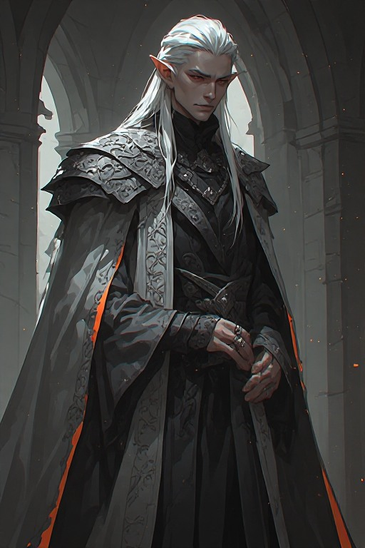
Neutral — Hostile
The Ironroot Compact
A dwarven-elven alliance aligned with Aurenthal for trade. Not inherently cruel, but complicit. Can be turned neutral through diplomacy.
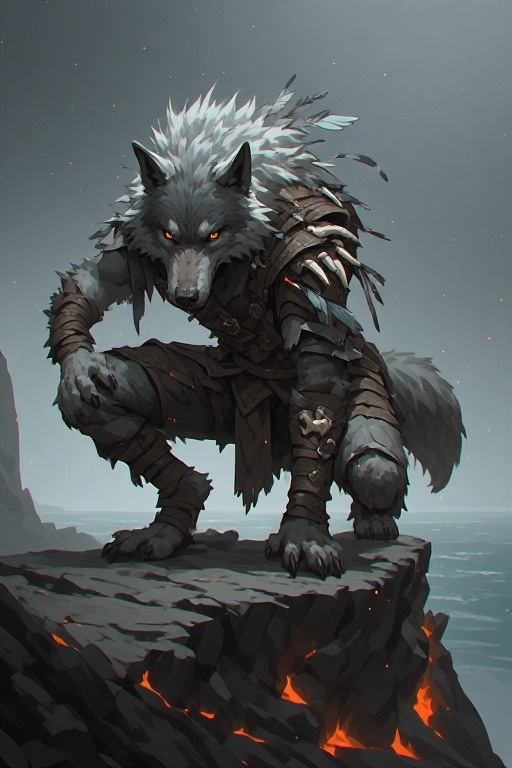
Swing Faction
The Drifting Kin
Beast-kin and wolf-kin of the Drifting Isles. Persecuted by humans almost as badly as demons. Distrust everyone — but can be won over.
— The Ashfields — stripped by generations of war — sacred and scarred —
Quest Types
Type I
Military Campaign
Lead demon forces in coordinated strikes — retaking border settlements, ambushing supply convoys, or defending Cinderkeep. Success raises rank; failure costs soldiers and favour.
Type II
Internal Loyalty
Root out Hollow Pact traitors embedded in the Vanguard. Some suspects are innocent, some evidence is planted. Wrongful purges cost allies; mercy can be exploited.
Type III
Slave Liberation
Infiltrate human-controlled territories to free demon slaves. Stealth-heavy. Freed slaves return as soldiers, craftspeople, or informants — each path has different long-term payoffs.
Type IV
Diplomatic
Negotiate with Demi-human tribes, disillusioned elves, or dwarf clans. No combat. Success hinges on dialogue choices and whether past actions have built or destroyed trust.
Tone & Style
Morally inverted high fantasy. The demons are not monsters — they grieve, they laugh, they hold funerals. The humans are not cartoonish villains — they genuinely believe they are righteous. The tension lives in that gap. Dark moments are earned, not gratuitous. The warrior code of the Ashen Vanguard provides dignity and honour even in a losing war. Tone sits between epic and intimate — grand battles alongside personal stories of loyalty, sacrifice, and identity.
Difficulty
Easy — Ember
Enemies telegraph attacks clearly. Rival demons are less aggressive. Diplomatic checks have wider margins. Designed for players focused on story over challenge.
Medium — Ashfall
Balanced challenge. Rival sabotage is active. Heroes raid on a schedule. Poor choices compound over time. Recommended starting point.
Hard — Cinderborn
Traitors act without warning. Hero raids are lethal and unpredictable. Resources are scarce. One wrong alliance can collapse the entire campaign.